从7.0到8.x：5E对战平台这几年的版本进化史
7.0版本的「重塑观·感」是5E对战平台视觉上的分水岭，8.x系列则把重点放在了会员体系升级和数据能力扩展上。回头看这一路迭代，能摸到团队死磕的核心方向。
现状：刚迈进8.x的5E对战平台
现在打开5EPlay官网的客户端，版本号已经飘到了8.2.7.8这种八开头的数字。界面干净利落，左侧天梯排位、中间匹配大厅、右侧好友与战队——这种布局你可能已经看了一阵子了。但如果把时间拉回三四年，7.0版本上线之前的那套UI，跟现在完全是两个审美体系。
最近几个小版本的更新公告读起来像例行公事：跑图道具优化、新活动上线、环境治理报告。但把这些零散的小版本串起来看，再对比7.0那次"重塑观·感"级别的大版本，整个平台的迭代轨迹就清晰了。
来路：三次关键转折
我印象里5E对战平台的版本演进有三个重要的拐点。
7.0：视觉重构的分水岭
最大的一次肯定是7.0版本。官方给它起了个主题叫"重塑观·感"——这个口号在FPS圈并不罕见，但5E真敢把整个客户端推翻重做。之前的界面功能堆砌感很重，匹配、战绩、社区挤在一个窗口里互相抢注意力。7.0之后，客户端的职责被重新明确了：就是对局的入口。匹配、排位、5E BOX工具箱、训练模式各归各位，不抢戏。

这次重构不只是换皮。我跟几个长期在5E玩CSGO的老玩家聊过，他们最直观的感受是"客户端启动快了，界面不卡了"——这背后是客户端底层架构的调整。7.0之前的版本在多开、切换窗口时偶发卡顿，7.0之后基本消失了。这个变化很底层，但对日常使用的体验影响远大于表面的视觉升级。
会员体系升级：VIP/SVIP→5E PLUS
第二个转折点是5E PLUS的推出。老玩家还记得以前的VIP和SVIP两档会员——SVIP才能开优先匹配，VIP只是解锁一些辅助功能。5E PLUS把这两套合二为一，老VIP和SVIP可以免费升级。
升级后的权益清单变得很长，但拆开看其实是四类：环境类（优先匹配、受信账户、专属段位）、性能类（服务器选择、高配竞赛服）、数据类（高级统计、高光次数、Demo收藏）、组织类（自助房、训练房、战队位扩展）。这个分类设计是有讲究的——它分别对应了四种玩家画像：在意环境的天梯党、追求手感的竞技党、认真复盘的练枪党、带队开黑的队长。
高光时刻：从单一事件到多维度识别
高光时刻功能的迭代是最能反映团队数据能力成长的。早期版本的高光只识别"多杀"——三杀以上才触发，而且生成质量参差不齐。2025 S2赛季的更新里，官方一口气加了四种新事件：1v3残局、One Tap一枪爆头、穿射、混烟镜头。
这个扩展很有意思。多杀是结果导向的高光，而One Tap、穿射、混烟是技术导向的高光——你可能没有三杀，但一枪爆头带走一个的画面，对个人来说同样值得记录。1v3残局则是战术决策的高光，它不看你杀了几个人，看你在绝境下怎么处理。
三条产品线的分工进化
5E对战平台现在有三条产品线，从官方下载拿到的PC客户端、手机APP、网页数据中心，各自的职责是在几年里慢慢分化出来的。
早期的5E其实只有PC客户端，所有功能都塞在里面。手机APP最初只是做赛事资讯和观赛数据，后来慢慢加了战绩查询、实名认证管理——而且实名认证的更换和解绑现在只能通过APP完成，这个设计很多老玩家一开始没找到入口。
网页数据中心的定位最清晰：它是数据的沉淀层。选手和战队的多维度排名、历史榜单、DEMO收藏管理都在网页端。未收藏的Demo只存15天，收藏后才能长期保存——这个设计逼着认真复盘的玩家必须主动去网页端操作一次，也是在引导用户把数据从本地挪到云端。
迭代规律：团队一直在死磕什么
把这些版本变化放在一起看，有几件事是5E团队从始至终一直在做的。
第一是环境治理。反作弊系统、受信账户体系、优先匹配机制、人脸与令牌保护——这些功能分布在不同版本里，但方向高度一致：就是为"干净对局"付费。平台封禁体系分了作弊封禁、风险封禁、黑号封禁、关联封禁好几类，VAC封禁和平台封禁又是两套独立系统。官方反作弊周报几乎每周都发，想了解完整的封禁类型和申诉流程可以去5EPlay文档翻翻，处理的不是一个孤立功能，而是一整套风控逻辑。
第二是数据沉淀。从早期的基础数据统计，到后来的Swing Score（ Swing 分是衡量玩家在关键回合贡献的指标），再到高光时刻和DEMO收藏——5E一直在做一件事：把对局里发生的一切可量化的行为沉淀下来，给玩家复盘用。这个方向在国内FPS对战平台里走得比较靠前，其他平台要么只做基础统计，要么把数据分析外包给第三方。
第三是订阅体系的精细化。5E PLUS的四类权益设计对应四种用户画像，这不是巧合。免费层保留了匹配和娱乐的全部基础能力，订阅解锁的是进阶场景的刚需——这种设计既能保证免费用户的基础体验不打折，又能让真正需要进阶功能的玩家心甘情愿付费。
那什么是5E团队一直没碰的？社区内容生态。对比某些对战平台把社区做成产品核心，5E的客户端里社区模块一直很克制——好友大厅、战队系统是社交场景，但核心还是"约战"和"带队伍"，而不是UGC内容消费。
预判：照这个路线，下一步会怎样
从迭代规律推，接下来的版本大概率会在这几个方向继续深化。
Swing Score的扩展应用：现在Swing分主要用于天梯评分，但还没完全融入到赛后复盘和高光时刻里。如果平台能把"隐形贡献回合"也做成高光，那些没有三杀但在关键时刻破点、断后、打信息的玩家就能被看到。这个逻辑很顺，而且团队已经有了Swing Score的基础数据。
订阅权益的继续细化：5E PLUS现在的四类权益框架是清晰的，但每一类内部还有空间。比如组织类权益里的自助房间，能不能加更多自定义规则？数据类里的高光时刻，能不能让用户自己挑选剪辑片段？
APP功能权限的重新平衡：实名认证只能在APP操作这个设计，已经被很多老玩家吐槽过。但反过来想，APP作为移动端入口，承接了越来越多的账号管理功能——未来可能会有更多账户安全相关的操作从PC端挪到APP。
当然这些都是从迭代规律推的，不当官方口径传。5E对战平台的版本演进一直有自己的节奏，赛季大版本出方向，期间小版本滚活动，偶尔来一次7.0量级的重构——跟着这个节奏走，准没错。